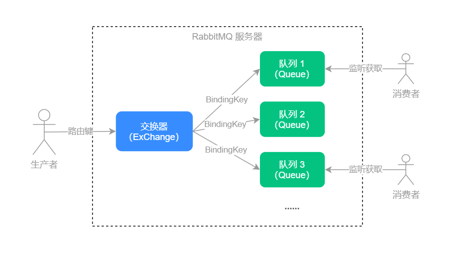

第一次听到“消息队列”这个词时，不知你是不是和我反应一样，感觉很高阶很厉害的样子，其实当我们了解了消息队列之后，发现它与普通的技术类似，当我们熟悉之后，也能很快地上手并使用。
我们本课时的面试题是，消息队列的使用场景有哪些？如何手动实现一个消息队列和延迟消息队列？
典型回答
消息队列的使用场景有很多，最常见的使用场景有以下几个。
1.商品秒杀
比如，我们在做秒杀活动时，会发生短时间内出现爆发式的用户请求，如果不采取相关的措施，会导致服务器忙不过来，响应超时的问题，轻则会导致服务假死，重则会让服务器直接宕机，给用户带来的体验也非常不好。如果这个时候加上了消息队列，服务器接收到用户的所有请求后，先把这些请求全部写入到消息队列中再排队处理，这样就不会导致同时处理多个请求的情况；如果消息队列长度超过可以承载的最大数量，那么我们可以抛弃当前用户的请求，通知前台用户“页面出错啦，请重新刷新”等提示，这样就会有更好的交互体验。
2.系统解耦
使用了消息队列之后，我们可以把系统的业务功能模块化，实现系统的解耦。例如，在没有使用消息队列之前，当前台用户完善了个人信息之后，首先我们需要更新用户的资料，再添加一条用户信息修改日志。但突然有一天产品经理提了一个需求，在前台用户信息更新之后，需要给此用户的增加一定的积分奖励，然后没过几天产品经理又提了一个需求，在前台用户信息更新之后，不但要增加积分奖励，还要增加用户的经验值，但没过几天产品经理的需求又变了，他要求完善资料无需增加用户的积分了，这样反反复复、来来回回的折腾，我想研发的同学一定受不了，但这是互联网公司的常态，那我们有没有一劳永逸的办法呢？
没错，这个时候我们想到了使用消息队列来实现系统的解耦，每个功能的实现独立开，只需要一个订阅或者取消订阅的开关就可以了，当需要增加功能时，只需要打开订阅“用户信息完善”的队列就行，如果过两天不用了，再把订阅的开关关掉就行了，这样我们就不用来来回回的改业务代码了，也就轻松的实现了系统模块间的解耦。
3.日志记录
我们大部分的日志记录行为其实是和前台用户操作的主业务没有直接关系的，只是我们的运营人和经营人员需要拿到这部分用户操作的日志信息，来进行用户行为分析或行为监控。在我们没有使用消息队列之前，笼统的做法是当有用户请求时，先处理用户的请求再记录日志，这两个操作是放在一起的，而前台用户也需要等待日志添加完成之后才能拿到后台的响应信息，这样其实浪费了前台用户的部分时间。此时我们可以使用消息队列，当响应完用户请求之后，只需要把这个操作信息放入消息队列之后，就可以直接返回结果给前台用户了，无序等待日志处理和日志添加完成，从而缩短了前台用户的等待时间。
我们可以通过JDK提供的Queue来实现自定义消息队列，使用DelayQueue实现延迟消息队列。
考点分析
对于消息队列的考察更侧重于消息队列的核心思想，因为只有理解了什么是消息队列？以及什么情况下要用消息队列？才能解决我们日常工作中遇到的问题，而消息队列的具体实现，只需要掌握一个消息中间件的使用即可，因为消息队列中间件的核心实现思路是一致的，不但如此，消息队列中间件的使用也大致类似，只要掌握了一个就能触类旁通的用好其他消息中间件。
和本课时相关的面试题，还有以下这两个：
- 介绍一个你熟悉的消息中间件？
- 如何手动实现消息队列？
知识扩展
1.常用消息中间件 RabbitMQ
目前市面上比较常用的MQ（Message Queue，消息队列）中间件有RabbitMQ、Kafka、
RocketMQ，如果是轻量级的消息队列可以使用Redis提供的消息队列，本课时我们先来介绍一下
RabbitMQ，其他消息中间件将会在第15课时中单独介绍。
RabbitMQ 是一个老牌开源的消息中间件，它实现了标准的AMQP（Advanced Message Queuing Protocol，高级消息队列协议）消息中间件，使用Erlang 语言开发，支持集群部署，和多种客户端语言混合调用，它支持的主流开发语言有以下这些：
- Java and Spring
- .NET
- Ruby
- Python
- PHP
- JavaScript and Node
- Objective-C and Swift
- Rust
- Scala
- Go
更多支持语言，点击这里访问官网查看。
RabbitMQ中有3个重要的概念：生产者、消费者和代理。
- 生产者：消息的创建者，负责创建和推送数据到消息服务器。
- 消费者：消息的接收方，用于处理数据和确认消息。
- 代理：也就是RabbitMQ服务本身，它用于扮演“快递”的角色，因为它本身并不生产消息，只是扮演了“快递”的角色，把消息进行暂存和传递。
它们的运行流程，如下图所示：

RabbitMQ具备以下几个优点：
- 支持持久化，RabbitMQ支持磁盘持久化功能，保证了消息不会丢失；
- 高并发，RabbitMQ使用了Erlang 开发语言，Erlang是为电话交换机开发的语言，天生自带高并发光环和高可用特性；
- 支持分布式集群，正是因为Erlang 语言实现的，因此RabbitMQ集群部署也非常简单，只需要启动每个节点并使用–link 把节点加入到集群中即可，并且RabbitMQ支持自动选主和自动容灾；
- 支持多种语言，比如Java、NET、PHP、Python、JavaScript、Ruby、Go等；
- 支持消息确认，支持消息消费确认（ack）保证了每条消息可以被正常消费；
- 它支持很多插件，比如网页控制台消息管理插件、消息延迟插件等，RabbitMQ的插件很多并且使用都很方便。
RabbitMQ的消息型，分为以下四种：
- direct（默认类型）模式，此模式为一对一的发送方式，也就是一条消息只会发送给一个消费者；
- headers 模式，允许你匹配消息的header 而非路由键（RoutingKey），除此之外headers和
direct的使用完全一致，但因为headers匹配的性能很差，几乎不会被用到； - fanout模式，为多播的方式，会把一个消息分发给所有的订阅者；
- topic模式，为主题订阅模式，允许使用通配符（#、*）匹配一个或者多个消息，我可以使用
“cn.mq.#”匹配到多个前缀是“cn.mq.xxx”的消息，比如可以匹配到”cn.mq.rabbit”、
“cn.mq.kafka”等消息。
2.自定义消息队列
我们可使用Queue来实现消息队列，Queue大体可分为以下三类：
- 双端队列（Deque）是Queue的子类也是Queue的补充类，头部和尾部都支持元素插入和获取；
- 阻塞队列指的是在元素操作时（添加或删除），如果没有成功，会阻塞等待执行，比如当添加元素时，如果队列元素已满，队列则会阻塞等待直到有空位时再插入；
- 非阻塞队列，和阻塞队列相反，它会直接返回操作的结果，而非阻塞等待操作，双端队列也属于非阻塞队列。
自定义消息队列的实现代码如下：
1 | import java.util.LinkedList; |
以上程序的执行结果是：
1 | first message. |
可以看出消息是以先进先出顺序进行消费的。
实现自定义延迟队列需要实现 Delayed 接口，重写 getDelay() 方法，延迟队列完整实现代码如下：
1 | import lombok.Getter; |
以上程序的执行结果是：
1 | 开始执行时间：2020-4-2 16:17:28 |
可以看出，消息 1 和消息 2 都实现了延迟执行的功能。
小结
本课时讲了消息队列的使用场景：商品秒杀、系统解耦和日志记录，我们还介绍了RabbitMQ以及它的消息类型和它的特点等内容，同时还使用Queue的子类LinkedList 实现了自定义消息队列，使用
DelayQueue 实现了自定义延迟消息队列。